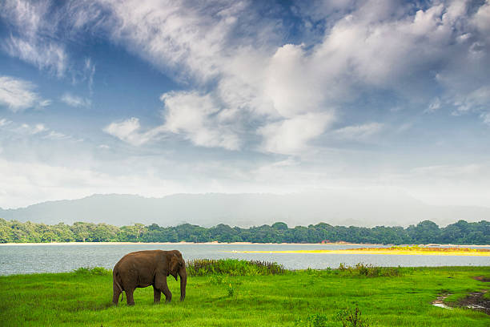
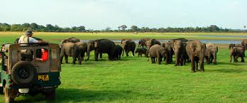

Minneriya is a small town in Sri Lanka that is famous for two things — the great Minneriya lake built by King Mahasen and Minneriya National Park which is a hot spot for safari lovers because of its abundance of elephants. Furthermore, it is near the tourist-friendly Habarana and the world heritage sites Anuradhapura, Polonnaruwa and Sigiriya. The area is home to the Infantry Training Centre as well as a training centre of the Military Police of the Sri Lanka Army. The 6th Artillery Regiment is based at Minneriya along with the SLAF base SLAF Hingurakgoda. Written by Lanka Nest Sunday, 09 March 2008 ImageThis was constructed by King Mahasen in the 4th century. Mahasen is a king who had constructed a large number of tanks. This is also situated along Polonnaruwa Habarana Road. Mahawamsa and allied works refer to this tank as “Minihira vapi”. This tank is fed by the waters of Amban Ganga. An anicut has been built across Ambanganga and water is thereafter taken to Minneriya tank through a canal called ‘Thalawatu Ela’. There is also an ancient anicut at Elahera constructed by King Vasbaha, ( across Amban Ganga ? )which supplied water to a vast area under paddy cultivation. It was this same anicut which supplied water for the Minneriya Scheme.
 